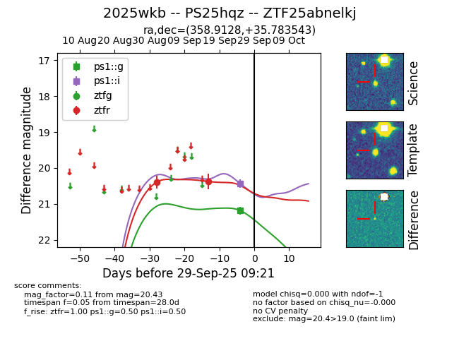
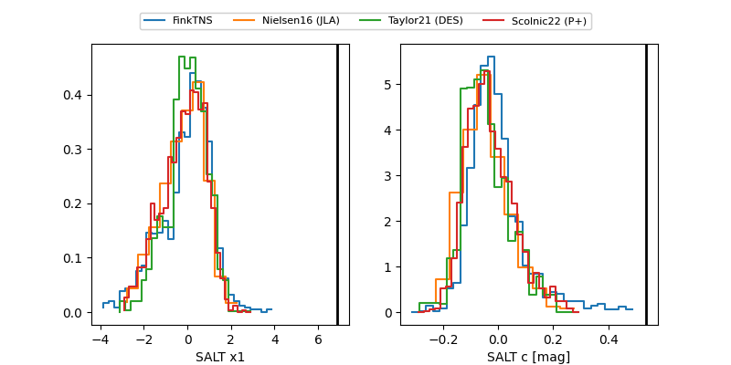

FINK: ZTF25abnelkj
Lasair: ZTF25abnelkj
ALeRCE: ZTF25abnelkj
TNS: 2025wkb
YSE: 2025wkb
ZTF25abnelkj (ztf,fink)
2025wkb (tns,yse)
PS25hqz (panstarrs)
equatorial (ra, dec) = (358.9128,+35.78354)
galactic (l, b) = (110.3970,-25.72663)


last ps1::g=21.18, ps1::i=20.43, ztfr=20.37
1 ps1::g, 1 ps1::i, 2 ztfr detections